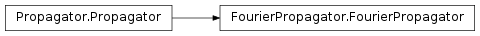
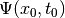
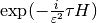
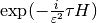
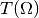

FourierPropagator¶
About the FourierPropagator class¶
The WaveBlocks Project
@author: R. Bourquin @copyright: Copyright (C) 2010, 2011, 2012, 2013, 2014, 2015 R. Bourquin @license: Modified BSD License
Inheritance diagram¶

Class documentation¶
- class WaveBlocksND.FourierPropagator(potential, initial_values, para)¶
This class can numerically propagate given initial values  on a potential hyper surface
 . The propagation is done with a Strang splitting
of the time propagation operator .
. The propagation is done with a Strang splitting
of the time propagation operator .- get_number_components()¶
Get the number
 of components of
of components of  .
.Returns: The number .
- get_operators()¶
Get the kinetic and potential operators  and
 .
.Returns: A tuple  containing two ndarrays.
containing two ndarrays.
- get_potential()¶
Returns the potential
used for time propagation.Returns: A MatrixPotential subclass instance.
- get_wavefunction()¶
Get the wavefunction that stores the current data
 .
.Returns: The WaveFunction instance.
- post_propagate()¶
Given the wavefunction
 at final time
at final time  ,
perform some computations exactly once after running the ordinary
time propagation and before each time simulation data will be saved.
,
perform some computations exactly once after running the ordinary
time propagation and before each time simulation data will be saved.This method does not raise an exception but instead just does nothing and returns.
- pre_propagate()¶
Given the wavefunction
at initial time  ,
perform some computations exactly once before running the ordinary
time propagation and after each time simulation data was saved.
,
perform some computations exactly once before running the ordinary
time propagation and after each time simulation data was saved.This method does not raise an exception but instead just does nothing and returns.
- propagate()¶
Given the wavefunction values
at time  , calculate
new values
, calculate
new values  at time
at time  . We perform exactly
one single timestep of size
. We perform exactly
one single timestep of size  within this function.
within this function.